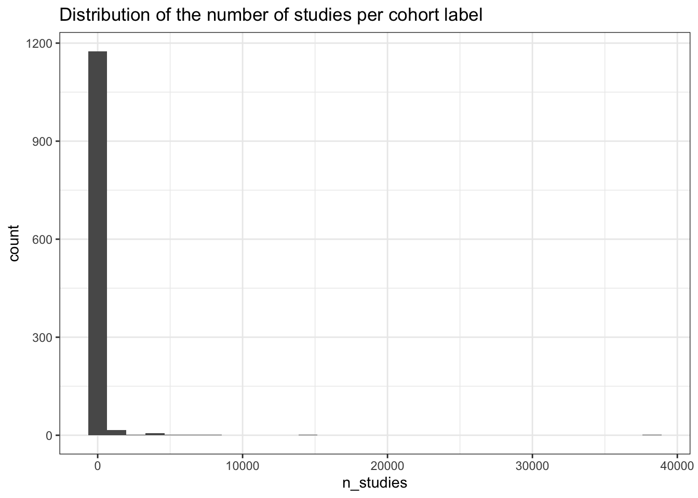

Last updated: 2025-08-21
Checks: 7 0
Knit directory:
genomics_ancest_disease_dispar/
This reproducible R Markdown analysis was created with workflowr (version 1.7.1). The Checks tab describes the reproducibility checks that were applied when the results were created. The Past versions tab lists the development history.
Great! Since the R Markdown file has been committed to the Git repository, you know the exact version of the code that produced these results.
Great job! The global environment was empty. Objects defined in the global environment can affect the analysis in your R Markdown file in unknown ways. For reproduciblity it’s best to always run the code in an empty environment.
The command set.seed(20220216) was run prior to running
the code in the R Markdown file. Setting a seed ensures that any results
that rely on randomness, e.g. subsampling or permutations, are
reproducible.
Great job! Recording the operating system, R version, and package versions is critical for reproducibility.
Nice! There were no cached chunks for this analysis, so you can be confident that you successfully produced the results during this run.
Great job! Using relative paths to the files within your workflowr project makes it easier to run your code on other machines.
Great! You are using Git for version control. Tracking code development and connecting the code version to the results is critical for reproducibility.
The results in this page were generated with repository version 60e1a17. See the Past versions tab to see a history of the changes made to the R Markdown and HTML files.
Note that you need to be careful to ensure that all relevant files for
the analysis have been committed to Git prior to generating the results
(you can use wflow_publish or
wflow_git_commit). workflowr only checks the R Markdown
file, but you know if there are other scripts or data files that it
depends on. Below is the status of the Git repository when the results
were generated:
Ignored files:
Ignored: .Rproj.user/
Ignored: data/gwas_catalog/
Ignored: output/gwas_study_info_cohort_corrected.csv
Untracked files:
Untracked: analysis/collapse_traits.Rmd
Untracked: data/.DS_Store
Untracked: renv/
Unstaged changes:
Modified: .Rprofile
Modified: analysis/collapse_cohorts.Rmd
Modified: code/collapse_diseases.R
Note that any generated files, e.g. HTML, png, CSS, etc., are not included in this status report because it is ok for generated content to have uncommitted changes.
These are the previous versions of the repository in which changes were
made to the R Markdown (analysis/cohort_dist.Rmd) and HTML
(docs/cohort_dist.html) files. If you’ve configured a
remote Git repository (see ?wflow_git_remote), click on the
hyperlinks in the table below to view the files as they were in that
past version.
| File | Version | Author | Date | Message |
|---|---|---|---|---|
| Rmd | 60e1a17 | IJbeasley | 2025-08-21 | Updating cohort distribution analysis |
knitr::opts_chunk$set(echo = TRUE, message = FALSE, warning = FALSE)
library(data.table)
library(dplyr)
library(ggplot2)
library(stringr)# Load GWAS Catalog studies
# gwas_study_info <- fread(here::here("data/gwas_catalog/gwas-catalog-v1.0.3.1-studies-r2025-07-21.tsv"),
# sep = "\t", quote = "")
gwas_study_info <- fread(here::here("output/gwas_study_info_cohort_corrected.csv"))
gwas_ancest_info <- fread(here::here("data/gwas_catalog/gwas-catalog-v1.0.3.1-ancestries-r2025-07-21.tsv"),
sep = "\t", quote = "")
# Standardize column names (remove spaces)
gwas_study_info <- gwas_study_info |>
rename_all(~gsub(" ", "_", .x))
gwas_ancest_info <- gwas_ancest_info |>
rename_all(~gsub(" ", "_", .x)) gwas_study_info$STUDY_ACCESSION |> unique() |> length()[1] 142855gwas_study_info$STUDY_ACCESSION |> length()[1] 142855# each row is a study accession in gwas study info,
gwas_ancest_info$STUDY_ACCESSION |> unique() |> length()[1] 142839gwas_ancest_info$STUDY_ACCESSION |> length()[1] 200466# study accessions have multiple rows in gwas ancest info,
# because of multiple ancestries per study# number of rows per pubmed id
# distribution
gwas_ancest_info |>
group_by(PUBMED_ID) |>
summarise(n = n()) |>
pull(n) |>
summary() Min. 1st Qu. Median Mean 3rd Qu. Max.
1.00 2.00 2.00 27.38 4.00 11670.00 gwas_study_info |>
group_by(PUBMED_ID) |>
summarise(n = n()) |>
pull() |>
summary() Min. 1st Qu. Median Mean 3rd Qu. Max.
1.0 1.0 1.0 19.5 3.0 7972.0 # PUBMED_ID, FIRST_AUTHOR, DATE (deposition date), STUDY_ACCESSION are the only consistent
# across ancestry and study metadata
colnames(gwas_ancest_info)[colnames(gwas_ancest_info) %in% colnames(gwas_study_info)][1] "STUDY_ACCESSION" "PUBMED_ID" "FIRST_AUTHOR" "DATE" colnames(gwas_study_info)[colnames(gwas_study_info) %in% colnames(gwas_ancest_info)][1] "PUBMED_ID" "FIRST_AUTHOR" "DATE" "STUDY_ACCESSION"More rows in gwas ancestry dataset, corresponding to multiple rows (sometimes) for the same study accession - done when multiple ancestries for the same cohort.
# Number of unique cohorts
length(unique(gwas_study_info$COHORT))[1] 1205# Studies per cohort
studies_per_cohort = gwas_study_info |>
group_by(COHORT) |>
summarise(n_studies = n()) |>
arrange(desc(n_studies))
summary(studies_per_cohort$n_studies) Min. 1st Qu. Median Mean 3rd Qu. Max.
1.0 1.0 2.0 118.5 5.0 38265.0 studies_per_cohort |>
ggplot(aes(x=n_studies)) +
geom_histogram() +
theme_bw() +
labs(title = "Distribution of the number of studies per cohort label")
dplyr::slice_head(studies_per_cohort, n = 10)# A tibble: 10 × 2
COHORT n_studies
<chr> <int>
1 "UKBB" 38265
2 "" 15019
3 "other" 8529
4 "MVP" 7669
5 "AASK" 6790
6 "AGES" 4782
7 "CLSA" 4449
8 "INTERVAL" 3874
9 "Knight_ADRC|ADNI|Barcelona-1|GR@ACE|DIAN|NR|Stanford_ADRC|PPMI" 3608
10 "JHS" 3530all_cohorts = gwas_study_info$COHORT
all_cohorts = unlist(strsplit(all_cohorts, "\\|"))
length(unique(all_cohorts))[1] 1078data.frame(cohort = all_cohorts) |>
group_by(cohort) |>
summarise(n_studies = n()) |>
pull(n_studies) |>
summary() Min. 1st Qu. Median Mean 3rd Qu. Max.
1.0 2.0 5.0 205.4 21.0 43189.0 single_use_cohorts_v2 =
data.frame(cohort = all_cohorts) |>
group_by(cohort) |>
summarise(n_studies = n()) |>
filter(n_studies == 1) |>
pull(cohort)
single_use_cohorts_v2 |> unique() |> length()[1] 208gwas_study_info |>
group_by(COHORT, STUDY_ACCESSION) |>
summarise(n = n()) |>
pull(n) |>
summary() Min. 1st Qu. Median Mean 3rd Qu. Max.
1 1 1 1 1 1 # yep - for the same study accession, same cohort# not true for pubmed i believe ....
gwas_study_info |>
select(PUBMED_ID, COHORT) |>
distinct() |>
group_by(PUBMED_ID) |>
summarise(n_pubmed = n()) |>
pull(n_pubmed) |>
summary() Min. 1st Qu. Median Mean 3rd Qu. Max.
1.000 1.000 1.000 1.079 1.000 55.000 pubmed_multi_cohort =
gwas_study_info |>
select(PUBMED_ID, COHORT) |>
distinct() |>
group_by(PUBMED_ID) |>
summarise(n_pubmed = n()) |>
filter(n_pubmed > 1) |>
pull(PUBMED_ID)
gwas_study_info |>
filter(PUBMED_ID %in% pubmed_multi_cohort) |>
select(PUBMED_ID, COHORT, STUDY_ACCESSION) |>
head() PUBMED_ID COHORT STUDY_ACCESSION
<int> <char> <char>
1: 30510241 GCST007856
2: 30510241 GECCO GCST012880
3: 30510241 CORECT GCST012879
4: 30510241 CORSA GCST012878
5: 30510241 GECCO GCST012877
6: 30510241 GECCO GCST012876
sessionInfo()R version 4.3.1 (2023-06-16)
Platform: aarch64-apple-darwin20 (64-bit)
Running under: macOS 15.6
Matrix products: default
BLAS: /Library/Frameworks/R.framework/Versions/4.3-arm64/Resources/lib/libRblas.0.dylib
LAPACK: /Library/Frameworks/R.framework/Versions/4.3-arm64/Resources/lib/libRlapack.dylib; LAPACK version 3.11.0
locale:
[1] en_US.UTF-8/en_US.UTF-8/en_US.UTF-8/C/en_US.UTF-8/en_US.UTF-8
time zone: America/Los_Angeles
tzcode source: internal
attached base packages:
[1] stats graphics grDevices datasets utils methods base
other attached packages:
[1] stringr_1.5.1 ggplot2_3.5.2 dplyr_1.1.4 data.table_1.17.8
[5] workflowr_1.7.1
loaded via a namespace (and not attached):
[1] gtable_0.3.6 jsonlite_2.0.0 compiler_4.3.1 renv_1.0.3
[5] promises_1.3.3 tidyselect_1.2.1 Rcpp_1.1.0 git2r_0.36.2
[9] callr_3.7.6 later_1.4.2 jquerylib_0.1.4 scales_1.4.0
[13] yaml_2.3.10 fastmap_1.2.0 here_1.0.1 R6_2.6.1
[17] labeling_0.4.3 generics_0.1.4 knitr_1.50 tibble_3.3.0
[21] rprojroot_2.1.0 RColorBrewer_1.1-3 bslib_0.9.0 pillar_1.11.0
[25] rlang_1.1.6 utf8_1.2.6 cachem_1.1.0 stringi_1.8.7
[29] httpuv_1.6.16 xfun_0.52 getPass_0.2-4 fs_1.6.6
[33] sass_0.4.10 cli_3.6.5 withr_3.0.2 magrittr_2.0.3
[37] ps_1.9.1 grid_4.3.1 digest_0.6.37 processx_3.8.6
[41] rstudioapi_0.17.1 lifecycle_1.0.4 vctrs_0.6.5 evaluate_1.0.4
[45] glue_1.8.0 farver_2.1.2 whisker_0.4.1 rmarkdown_2.29
[49] httr_1.4.7 tools_4.3.1 pkgconfig_2.0.3 htmltools_0.5.8.1